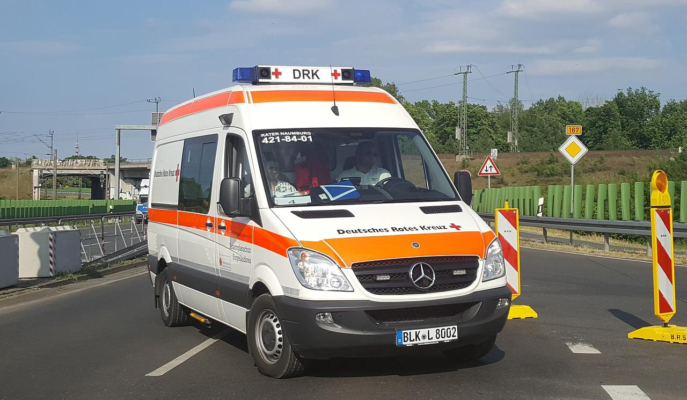

"Firewalking was voluntary - we didn't force anyone".
Several people were injured during a fire run on the Au peninsula.
injured. A participant and an eyewitness tell.
At a private event during a fire run on the (municipality of
Wädenswil), several people ran over glowing coals. coals. The
ambulance had to be deployed on Tuesday evening with a large
contingent. more than half of the people were taken to hospital.
taken to hospital. One participant told 20 Minuten: "After I walked
over the coals I walked over the coals, I cooled my feet with the
others in the cold water. with the others in the cold water. Only
after some time did that the pain did not go away, but got worse.
became worse. Those affected then had large blisters on their feet."
According to the Zurich cantonal police, 25 people received medical
treatment at the scene treated at the scene, 13 of whom had to be
hospitalized with serious had to be hospitalized. Investigations
into the circumstances of the accident are still ongoing. In
addition to the Zurich Cantonal Police, ten ambulances, one large
ambulances, a large ambulance, two emergency medical teams and a and
an on-call officer from Schutz und Rettung Zurich, the Lachen rescue
services Lachen, Zug, Männedorf and Regio 144 and a mixed patrol and
a mixed patrol of the Wädenswil city police and the Horgen municipal
police in action. Translated with www.DeepL.com/Translator (free
version)
One eyewitness criticized that the whole thing was portrayed much
worse than it was. "Some participants of a Firewalking seminar got
blisters on the soles of their feet. Then everything went very
quickly and the police and one ambulance after another drove up.
drove up." In the meantime, all the injured were able to leave the
hospital. were able to leave the hospital again. The company
involved is the advertising Goldbach, which, like 20 Minuten,
belongs to the TX Group. Group. "The firewalking was voluntary for
all participants. voluntary, no one was forced. The message on the
spot was, that you show at least as much courage if you don't walk
over the glowing coals," says a spokeswoman on request. Translated
with www.DeepL.com/Translator (free version)
Credits: 20Minuten
